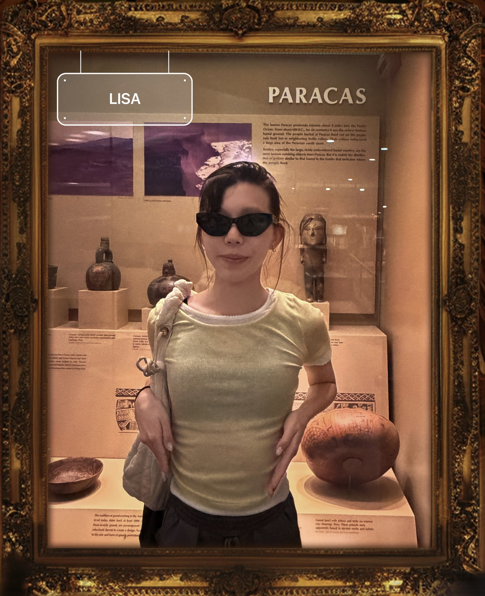

Welcome to the Homo Sapiens Wing
This exhibition documents the habits, habitats, and survival strategies of one remarkable modern human.
Warning: Please do not tap on the glass.
Specimen Profile

- Common name
- Lisa
- Species
- Homo sapiens nyuensis
- Habitat
- NYU Brooklyn campus, coffee shops, the G train, and her bed
Primary habitat:
View on Maps
Conservation Status
- Least Concern
- Stable
- Not endangered. Just tired.
- Population: 1. Researchers are concerned.
Diet
An opportunistic omnivore with a strong preference for:
- salmon avocado toasts,
- cheesecakes,
- and anything discovered on Beli.
Survival Strategies
Things required for survival
- Wi-fi
- 8+ hours of sleep
- Something sweet after dinner
- Phone battery above 20%
Known Predators
- Deadlines
- 9:00 AM Classes
- Low Battery
- "What do you want to eat?"
Defense Mechanisms
- Common name
- Lisa
- Species
- Homo sapiens nyuensis
- Habitat
- NYU Brooklyn campus, coffee shops, the G train, and her bed
- Distinctive traits
-
- Always has a water bottle
- Can locate the nearest coffee shop instantly
- Frequently says, “I’m so tired”
- 7 Consecutive Alarms
- Sudden 700% Productivity Increase
- Low Power Mode at 47%
- Opens Beli. Still Cannot Decide.